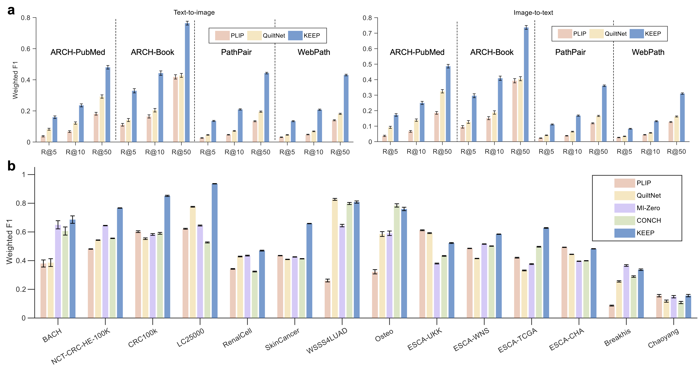

|
|
|
|
|
|
|
|
|
|
|
|
|
|
|
|
Code [GitHub] |
Paper [arXiv] |
Cite [BibTeX] |
Models [HuggingFace] |
Overview of KEEP. a. Example disease structure in the constructed knowledge graph. Each node represents a disease, consisting of three attributes types: hierarchical relations, synonyms, and definitions, as indicated by the dashed line box. b. The knowledge encoding and vision-language alignment stage for the KEEP model. A BERT-based text encoder is initially trained to encode the disease knowledge through metric learning. A knowledge-enhanced vision-language pre-training approach is proposed to align pathology semantic groups with filtered images and augmented captions. c. For downstream cancer diagnostic tasks, including cancer region segmentation, cancer detection, and cancer subtyping, whole slide images (WSIs) are divided into tile images for zero-shot classification, with the results of each tile combined to determine the final diagnostic decision. d. Performance comparison of cancer diagnosis with the state-of-the-art methods on 18 benchmarks with more than 14,000 WSIs. e. Performance comparison of tile-level classification with the state-of-the-art methods on 14 benchmarks. The inner and outer numbers indicate the worst and best results, respectively.

Statistics of semantic groups and zero-shot cancer region segmentation results. a. Statistics of all
semantic groups, organized by structuring one million noisy pathology image-text pairs with the guidance of disease KG. More
than 60% semantic groups are linked to specific disease nodes. b. The anatomy and cell type distribution of the semantic groups
with known disease labels, where "other" denotes the anatomy or cell type remains unknown. The anatomical taxonomy is
based on OncoTree. The anatomy and tumor types with the largest number of semantic groups are skin and carcinoma,
respectively. c. The scheme of zero-shot segmentation on WSIs, where individual tiles undergo binary classification and are then
combined to delineate the cancerous region. d,e. Performance comparisons of AUROC and DICE scores for various models,
including PLIP, QuiltNet, MI-Zero, CONCH, and our proposed KEEP, across three WSI datasets: CAMELYON16 (48 WSIs),
PANDA (10,494 WSIs), and AGGC22 (128 WSIs). The box plots present the median, first, and third quartiles of results, with μ
indicating the average performance. The DICE is calculated using the average threshold corresponding to the optimal cutoff
point of ROC curves in each dataset. Our proposed model, KEEP, achieves the best DICE and AUROC performance across all
WSI datasets compared to other state-of-the-art models. f. Example WSIs from three datasets (the first two for CAMELYON16,
the middle two for PANDA, and the last two for AGGC22) showing ground truth and predicted segmentation masks.
Zero-shot cancer detection results. a. The zero-shot cancer detection scheme on WSIs, where individual tiles
undergo binary classification. The probability of a slide being cancerous is determined by the predicted tumor ratio which is
calculated by the ratio of tumor tiles to all valid tiles. b. The comparison of the predicted tumor ratio between normal and
cancer WSIs in CPTAC-CM and CPTAC-CCRCC datasets. Two-sided Welch's t test is used to assess the statistical significance
of predicted tumor ratios among different WSIs. c-i. Comparison of ROC curves across different models, including CHIEF, PLIP,
QuiltNet, MI-Zero, CONCH, and KEEP, evaluated on seven CPTAC datasets across six tissue anatomies: skin, kidney, pancreas,
uterine, lung, and head and neck. Each dataset consists of 75 normal WSIs and 75 cancer slides, with each experiment using
1,000 bootstrap iterations. The AUROC for each model is reported as the median along with its 95% confidence intervals (CIs).
j. Comparison of average sensitivities across all datasets at the specificity of 0.95, the error bar denotes the standard deviation of
the performance. k. The robustness of our approach towards the threshold of the zero-shot classifier. l,m. Example visualizations
of cancer detection on CPATC-CM, CPTAC-UCEC datasets. The first and the second rows denote the normal and the cancer
WSIs. The heat map is generated by the similarities between the embeddings of tile images and that of "tumor" prompts.

Zero-shot cancer subtyping results. a. The zero-shot cancer subtyping scheme on WSIs, where individual
tiles undergo multi-class classification, including a "normal" label and tumor subtype labels. The probability of a slide being
classified as type I is determined by the ratio of type I tiles to all valid tiles. b. Comparison of balanced accuracy across
different models on seven datasets with common cancer subtypes. The TCGA-BRCA, TCGA-NSCLC, TCGA-ESCA, and
CPTAC-NSCLC datasets contain two subtypes, while the TCGA-RCC, TCGA-BRAIN, and UBC-OCEAN datasets consist of 3,
3, and 5 subtypes, respectively. Each subtype includes 75 WSIs, except for TCGA-ESCA (65 WSIs) and UBC-OCEAN (35
WSIs), with each experiment using 1,000 bootstrap iterations. c. Performance comparison of different models on the rare cancer
subtyping dataset, EBRAINS, which consists of 30 rare brain cancer subtypes, each with 30 WSIs. d. The confusion matrix of
the KEEP model on the rare brain cancer dataset, EBRAINS. e. Ablation results. Performance comparison between simple
contrastive (Contrastive-Top100), KEEP with knowledge enhancement (KEEP-Top100), and KEEP with tumor-ratio strategy
(KEEP-Ratio). Top100 suggests the strategy of top-100 pooling, while Ratio denotes the subtype ratio strategy. f. Example WSIs
for tumor subtyping. The left and the right WSIs denote esophagus adenocarcinoma and esophagus squamous cell carcinoma,
respectively. The orange and the green masks denote the predicted regions of adenocarcinoma and squamous cell carcinoma,
respectively. The blue squares denote the tile image from the area with normal predictions.

Zero-shot tile image profiling results. a. Performance comparison of different models on the cross-modal
retrieval task. R@K (k = 5, 10, and 50) denotes Recall@K, the ratio of correctly retrieved queries in Top-K retrieved samples. b.
Performance comparison of different models on the zero-shot tile image classification task. The error bar denotes the standard
deviation of the results from 1000 bootstrapping iterations

Architecture of KEEP. a. Disease knowledge encoding. We establish a knowledge graph that includes hypernym
relations, synonyms, and definitions of diseases, and pre-trained a disease knowledge encoder. Diseases at different levels are
represented by different colors. b. Knowledge-guided dataset structuring. We fine-tune YOLOv8 to remove noise in the pathology
image dataset, extract medical entities from the captions, align the diseases in the captions with the diseases and synonyms in
the knowledge graph, and cluster the filtered image and text data into semantic groups. The right side illustrates two specific
methods used during the clustering process. c. Knowledge-enhanced vision-language pre-training. We perform cropping and
random dropping augmentations on the images and texts, and paraphrase captions that contain diseases using templates. During
the training process, to mitigate the impact of false negatives, we design strategies for positive mining, hardest negative, and
false negative elimination.
Based on a template by Phillip Isola and Richard Zhang.